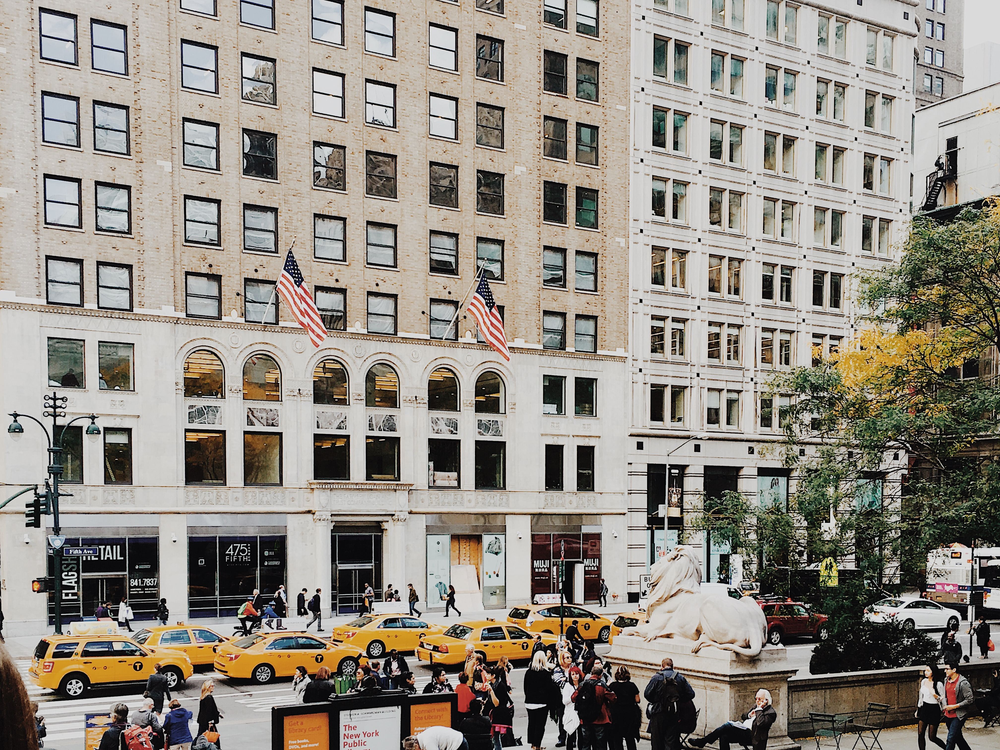
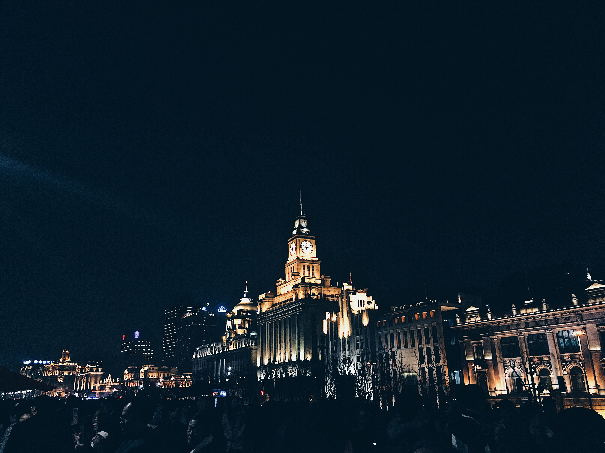
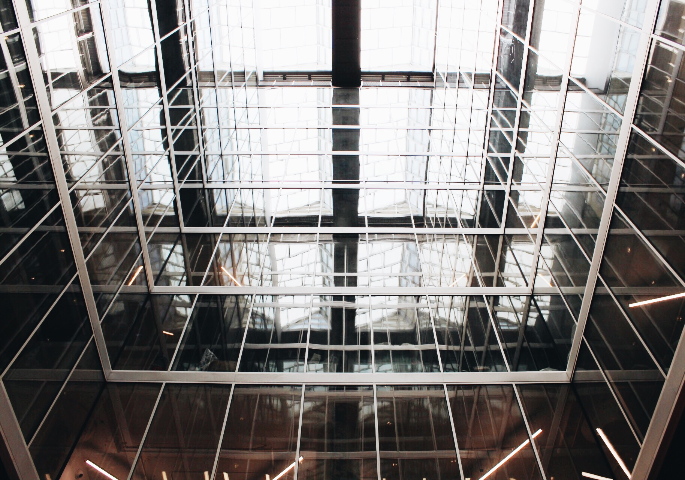
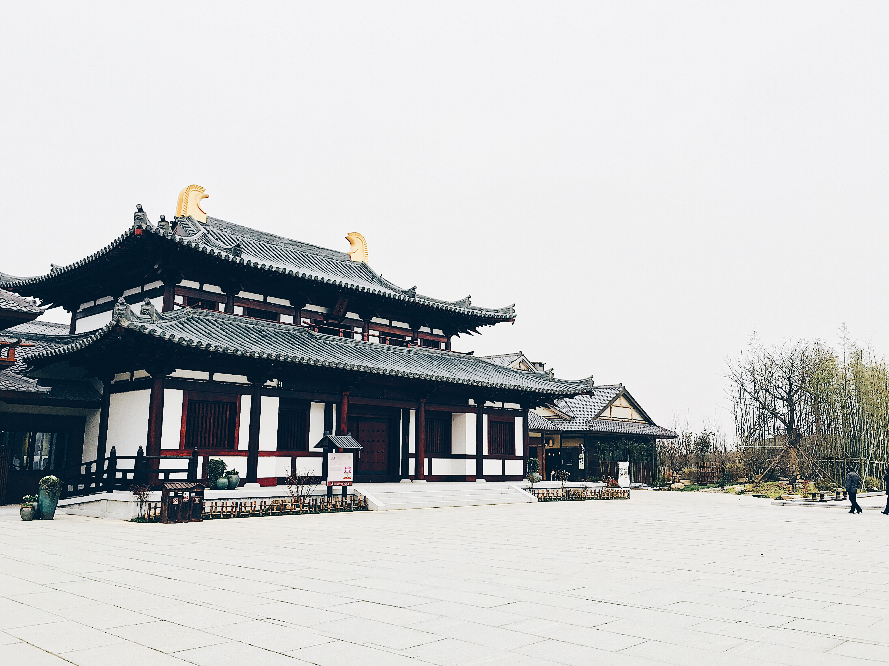
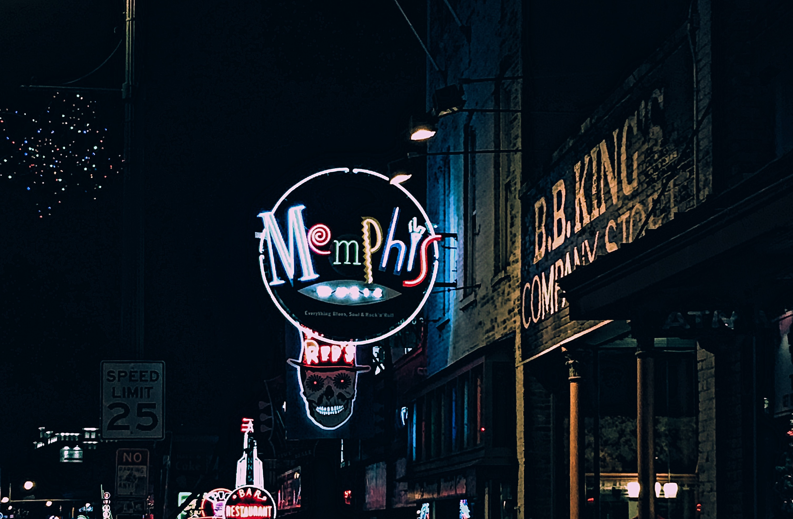

Art & Music are key to my happiness.
From a young age, my creativity shines through in all my endeavors. Doodling in coloring books and jamming out on my outdated toy piano segwayed into the artist I am today.